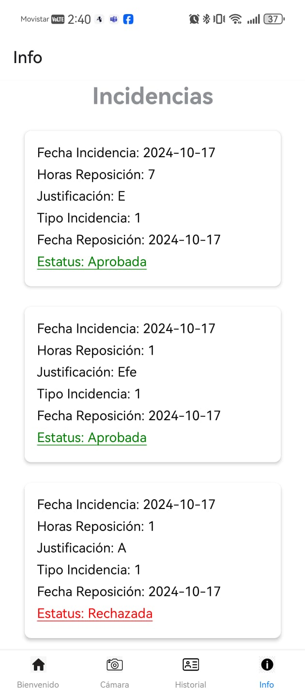
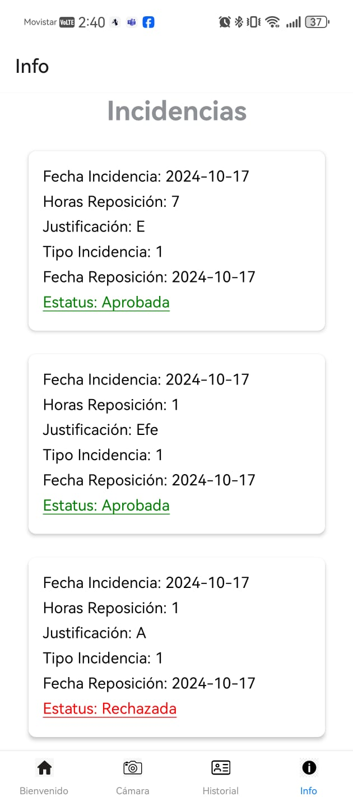

Sistema de Gestión de Personal
Aplicación mobil para gestionar la entrada y salida de los profesores por medio del reconicimiento de OCR de imágenes de tarjetas con horas impresas, la cual permite al personal administrativo llevar un control simplificado de las horas labooradas por su personal. Esta aplicación integra un modelo de google vision que se encarga de identificar y contabilizar el total de horas.
- Reconocimiento de texto (OCR)
- Administración de usuarios
- Encriptación de datos personales
- Modelo de reconocimiento de imágenes
- Restful API
 

Aplicación web para agente de reconocimiento para ruta más óptima
Esta aplicación web contiene un algoritmo de inteligencia artificial que utiliza el algritmo de estrella para encontrar la tuta más optima en un mapa que simula distintos tipos de terreno
Este algoritmo asigna un valor a las posibles rutas deacuerdo a la condición del terreno y toma la decisión de ir por el camino con menor coste. Toma en cuenta la distancia de su objetivo y al final entrega la mejor ruta posible.
- Reconocimiento de texto (OCR)
- Administración de usuarios
- Encriptación de datos personales
- Modelo de reconocimiento de imágenes
- Restful API